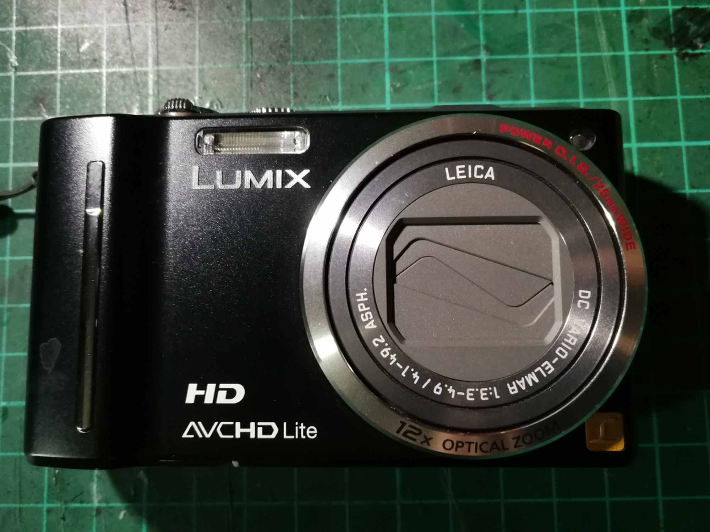
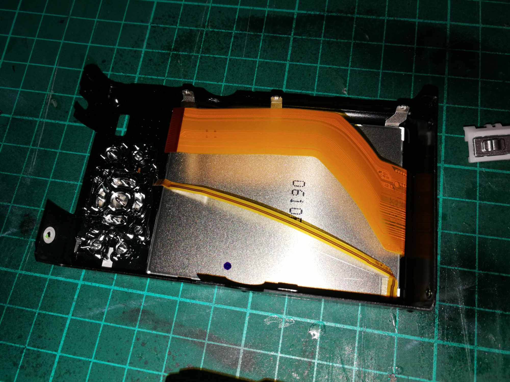
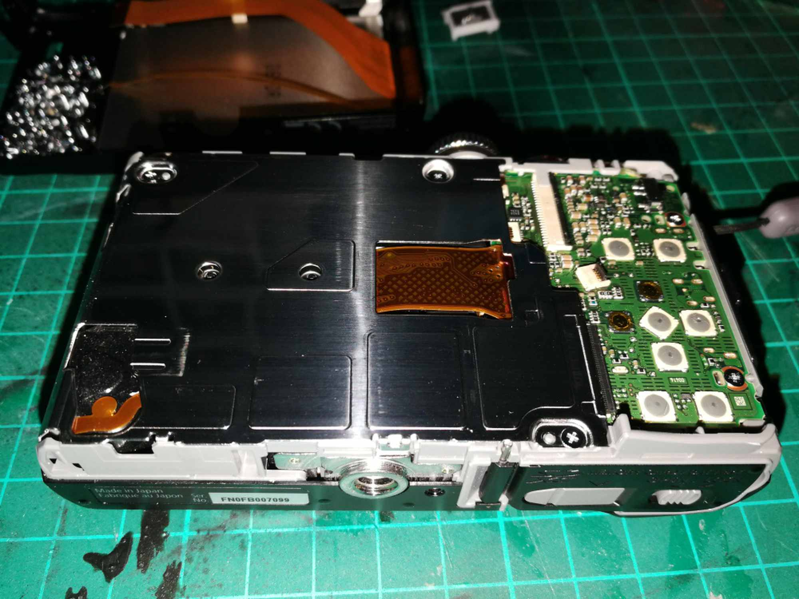
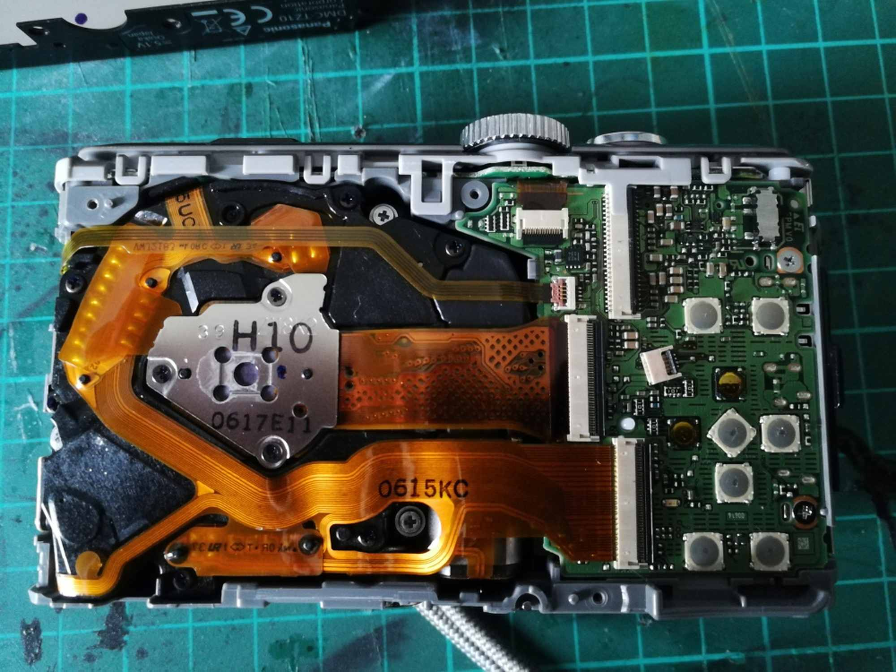
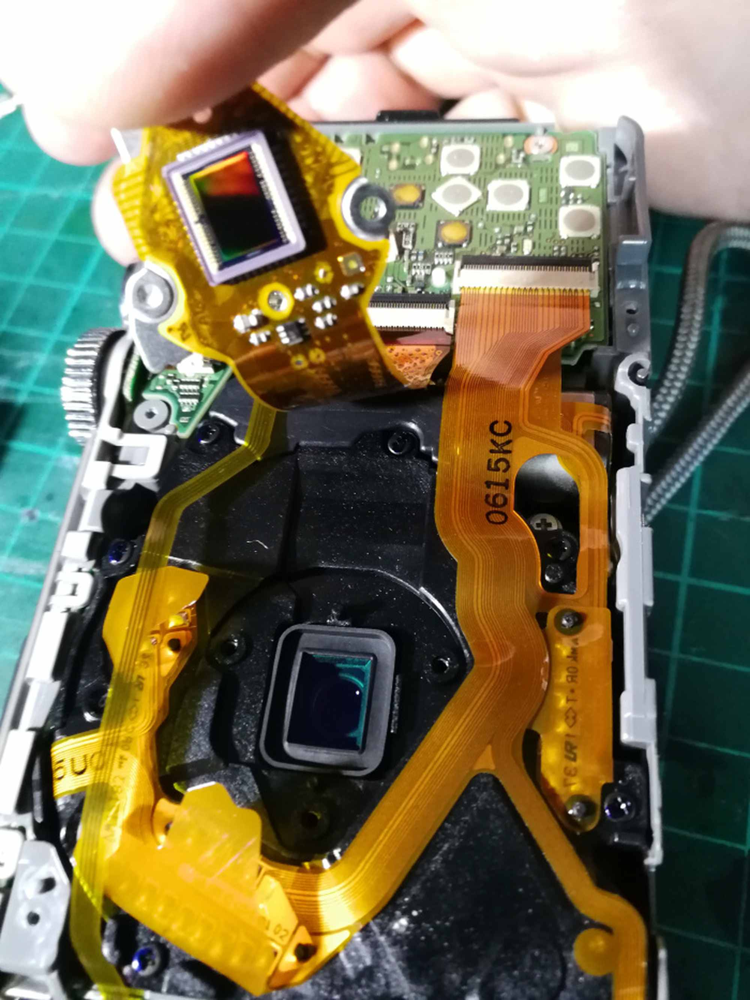
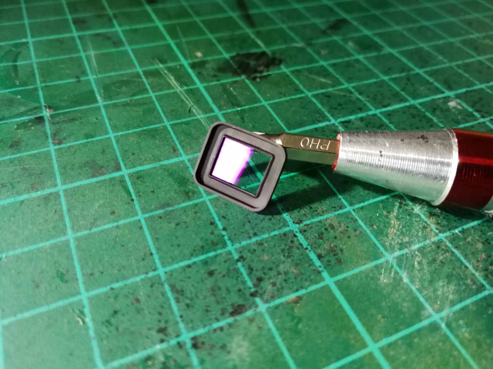
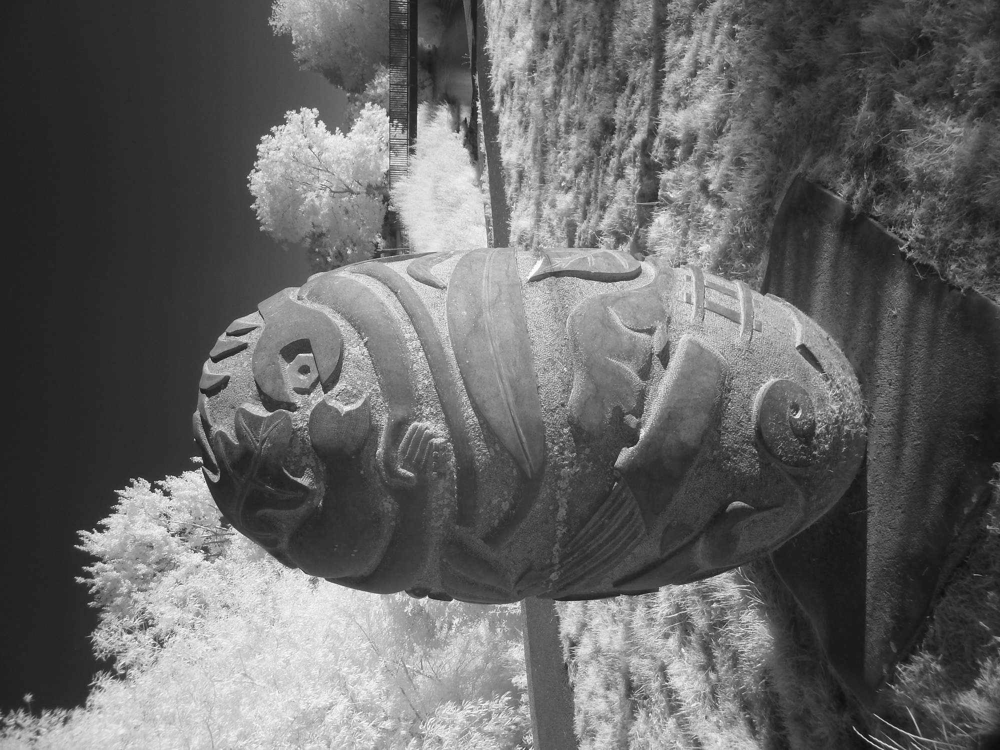
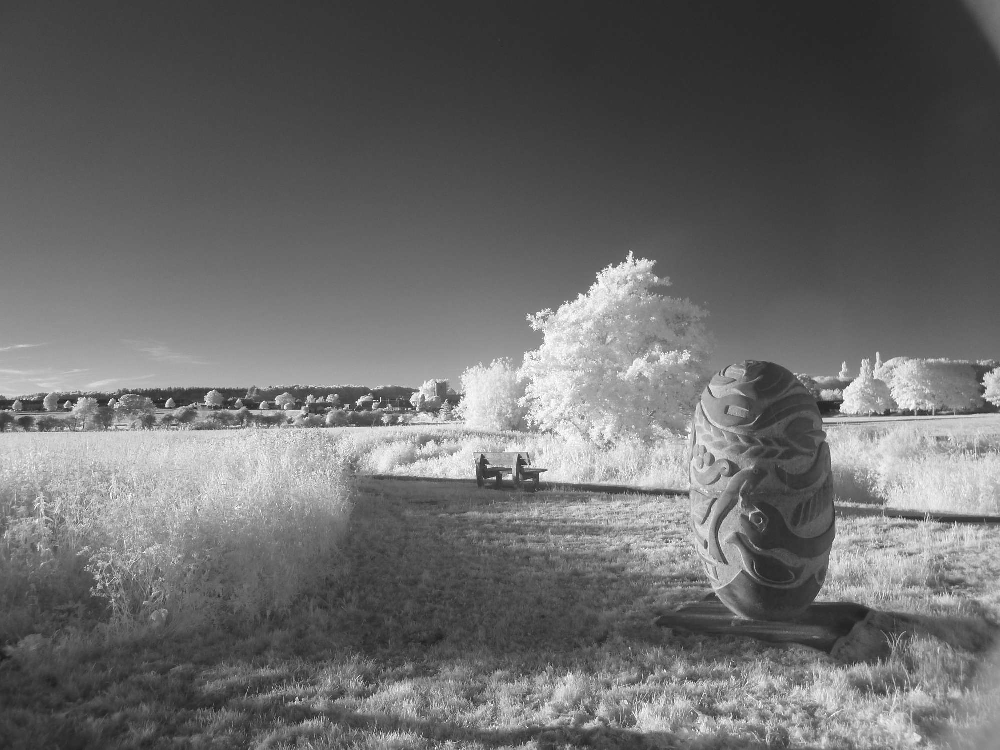
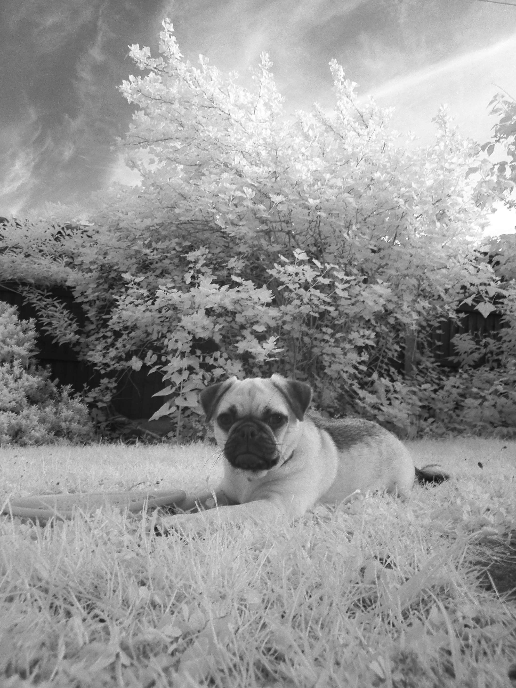
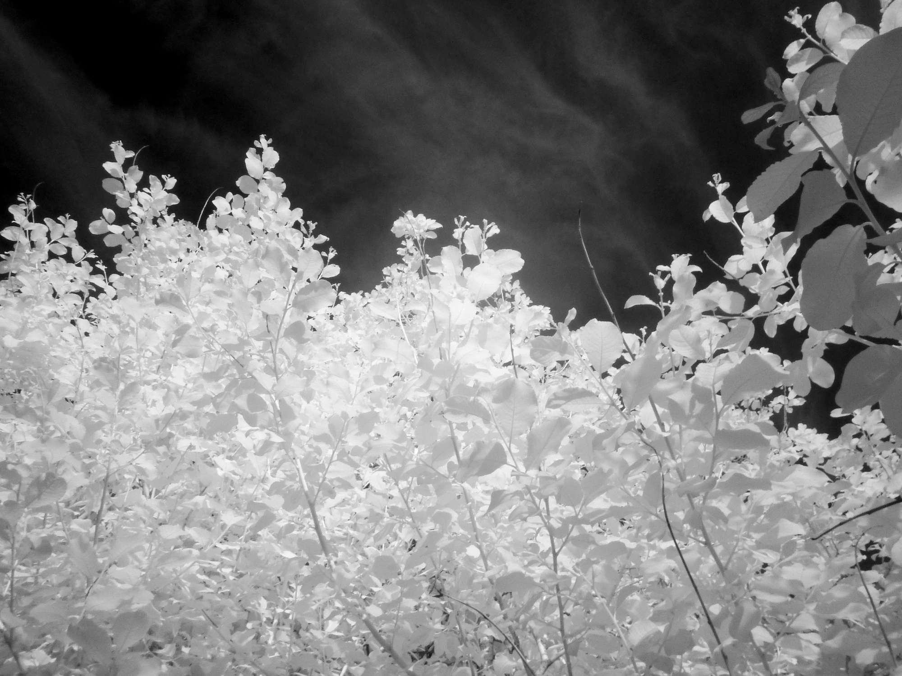

LUMIX TZ10 INFRARED CONVERSION
How to disassemble a compact camera for infrared conversion.

Remove the back panel by removing screws on the sides and bottom of the camera. Carefully remove the panel, and unclip the lcd power and data cables by opening their latches. This can be fiddly so take time. Also the preview switch (top right) can fly-out when taking the back off, but its not hard to put back.

The sensor is hidden behind shielding. Remove it by unscrewing the surrounding screws.

Behind the shielding is the CCD sensor held in place with three screws.
Unscrew the three screws on the sensor unit and lift gently. Remove the IR filter found underneath the sensor. The camera is probably dirty, so it may need a clean with air.

Remove the cameras IR Cut-Off Filter underneath the sensor. Assemble the camera back making sure to secure the sensor so that it is straight and level. Also be careful with the ribbon cables.

The removed filter.

Apply an infrared filter to the lens and set the camera to black and white.



